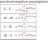
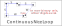

NiceLoop
NiceLoopは、セル間の強いリンクと弱いリンクを繋げてループを作る解析アルゴリズムです。
(1)セルに接続するリンク
セルとリンクに着目します。
強いリンクの場合は、セルの数字aの真/偽が決まると、リンクの他端では数字aの偽/真が決まります。
弱いリンクの場合は、数字#aが真のとき、リンクの他端では数字aの偽が決まります。弱いリンクでは、偽はリンクの真偽は伝搬しません。
なお、以下では強いリンクをS、弱いリンクをWと表します。

(2)リンク連結
リンクが連結すると解析アルゴリズムが構成できます。
セルに接続する 2リンクの組合せには、次の 3パターン（方向を含めると 4とおり）があります。
また、リンク連結の制約が伝搬するためには、次の条件を満たす必要があります。
- [リンク連結条件]
- S-S : リンクの数字は異なる。
- W-W : セルはbivalueで、リンクの数字は異なる。
- S-W、W-S : リンクの数字は同じ
左側から流入するリンクで 上から順に￢b,b,￢a,a (￢:非,not)と制約すると、右側に流出するリンクに制約が伝わります。 左から流入するとしましたが、右側から流入する場合にも、制約が伝搬することを確認してください。すなわち、リンク連結条件を満たす接続は双方向性を持ちます。

(3)連続ループ
起点セルから始めて、リンク連結条件を満たすリンク列が形成できたとします。
起点セルでもリンク連結条件が満たされる状態を連続ループといいます。
連続ループでは、もはや起点セルは無意味で、ループ上の全てのセルが同等の性質を持ちます。

連続ループでは、セルの数字は2種類に分類されます(次図のと)。この分類が強弱リンクの関係に矛盾していないことを確認してください。
2種類に分類された数字は、一方が真で他方は偽です。ただし、どちらが真かは決定していません。
また、リンクの両端は必ず真と偽なので弱いリンクは強いリンクと同じ性質を持つことになります。
このとき、ループを壊すセル・数字に対してLockedとなります。
従って、"弱いリンクのhouseでループ外のセル・数字"(次図右△)、
および強いリンクが2つ接続するセル内の"ループに関連しない数字"(同▲)は除外できます。
これら(△と▲)を真とすると、連続ループ上のとが同時に偽となります。つまり△と▲に対しLockedであることがわかります。

（4）不連続ループ
リンク列を延伸して起点セルに連結したとき、起点セルでリンク連結条件が満たされない状態を“不連続ループ”といいます。
すなわち、起点セルでは次のような状態です。
[リンク連結不連続条件]
- S-S : リンクの数字は同じ
- W-W : リンクの数字は同じ
- S-W、W-S : リンクの数字は異なる
- S-S : リンクの数字aは同じ ⇒ 着目セルはaと確定
- W-W : セルはbivalueでリンクの数字aは同じ ⇒ 着目セルは非aと確定
- S-W、W-S : リンクの数字は異なる ⇒ （弱いリンクの数字b）着目セルは非bと確定

(5)NiceLoopの例

Nice Loop(Continuous)
rc:r2c9=1=[r6c9]-1-[r6c7]-7-[r4c7]-6-[r4c9]=6=[r2c9]
r2c9#5 is false

Nice Loop(Continuous)
rc:r1c6-6-[r9c6]-7-[r4c6]-1-[r4c9]-8-[r2c9]=8=[r2c4]-8-[r1c6]
r6c6#7 r3c4#8 r6c9#8 is false

Nice Loop(Discontinuous)
rc:r9c1-1-[r1c1]=1=[r3c3]-1-[r8c3]-4-[r8c1]-1-[r9c1]
r9c1#1 is false

Nice Loop(Discontinuous)
rc:r8c7-7-[r8c1]-5-[r2c1]-2-[r4c1]-7-[r6c2]=7=[r6c7]-7-[r8c7]
r8c7#7 is false
47....5.92...7361...3.9...7...56..9..613.47...5..2..6.52..3...6.3.1.2..51.9...24.
......3...385.1.4.5..37..6..76..389...9...7...157..42..9..15..4.8.6.753...2......
6.14..5.7.3.7..4..9..35.....6..1.3.415.....688.4.3..1.....94..2..2..3.4.4.6..21.3
NiceLoopm解析アルゴリズム
NiceLoopの解析アルゴリズムでは、セルリンクを使います。
NiceLoopの解析は次の方法で行います。
- NiceLoopのメイン関数では、最初にセルリンクの準備を行い、 次に制御の ①サイズ設定、②着目セル設定、③着目数字設定、④最初のリンク設定、⑤結果保存用のstackを準備して、 実際の探索を行う関数（_NL_Search）を呼びます。サイズはセル列の長さです。
- 探索関数は再帰関数です。
- 最初に、次数に達したかを調べ、達している場合は即座に戻ります。
- 次数に達していない場合は、現在位置から、1リンク伸ばします。 伸ばすリンクは、前のリンク（と現在位置）からリンク接続条件を満たすリンクです。
- リンクを伸ばすとき、すでに使用済みのセルは除外します。
- リンクを伸ばしたとき、着目セルに達していれば、Niceloopの解として条件を満たすかをチェックします。 また、連続ループか不連続ループかを判定します。
- 連続ループの場合には、弱いリンクを強いリンクに変えるための除外と、S-Sセルの除外を調べます。
- 不連続ループでは、不連続セルの除外数字を調べます。
- 除外できる数字があるなら、Niceloopの解です。